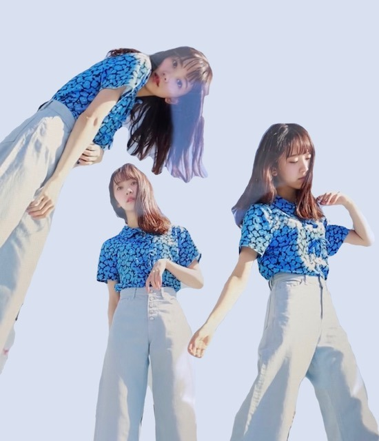
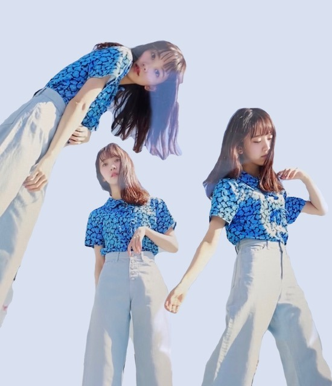
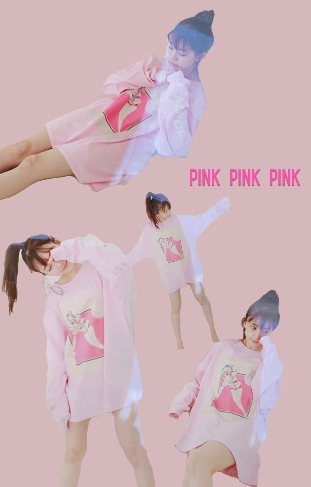

2020/0410Friひだりうで。
こんばんは!
コラージュに最近ハマってまして
12日発売のarのオフショットで
作ってみました❤︎



わーい！
最近だと
ロミオとジュリエットの
ロミオがパーティでジュリエットの手にキスしてる画像が好きでそれをコラージュしたり
私の好きな
" Elle Fanning "
" Audrey Hepburn "
" Taylor swift "
" Anne Hathaway "
の画像をコラージュしたりしてます．
ar、ぜひおうち時間のお供として
見てください☾
そしてレギュラーモデルになる前から
やらせていただいていたarの
"おもてなし達人への道" 連載が終了いたしました!
たくさんいろんな経験をさせていただけて
陶芸 和紙作り 和菓子作り そば打ち
飴細工 お茶の入れ方 魚の捌き方
美味しい白米の炊き方 美しいペン文字
お花を生ける 着物の着付け方 俳句
水彩画 裁縫などなど...
大人素敵女子になるべくいろんなことを
させていただけて気づけば23歳...
連載で学んだことが役立つ日々ですし
これからも身になることを続けていきたいです❁
終わってしまうのは寂しいけど
次号でお知らせがあるので、
お楽しみに~!
大好きなクレヨンしんちゃんを今朝見ていて
あ、私、しんちゃんの性格好きだなと．
面白くて行動が読めないけど
家族や友達思いで優しくて
いざというとき男気があって
素直で可愛さもあって
理想が詰まってました! 笑
野原一家って愛に溢れてますよね✦
素敵✦
北海道の話と宅配寿司の話と
大阪で食い倒れる話と猿が逃げてくる話が好きです
ちなみにロミオとジュリエットで
好きな台詞は
That which we call a rose by any other word would smell as sweet.
です
意味は
バラが別の名前でもその香りには変わらない
素敵!
また更新しますね
ではは
2020/04/10 19:30
コメント(290)
未央奈ブログ更新ありがとうね！
俺も未央奈の性格好きだよ(*´ω`*)
2期生思いな未央奈が1番好きー！！
本当に早く握手会行きたいな～
質問に答えてくれたら嬉しいです！
使ってる香水は？
お気に入りの画像は？
俺も未央奈の性格好きだよ(*´ω`*)
2期生思いな未央奈が1番好きー！！
本当に早く握手会行きたいな～
質問に答えてくれたら嬉しいです！
使ってる香水は？
お気に入りの画像は？
更新ありがとう。
コロナで大変だけどこれからも頑張って！
コロナで大変だけどこれからも頑張って！
未央奈ブログ更新ありがとう！
毎日ブログ読めて嬉しいな！
コラージュ上手！特に2枚目の画像が好き！
「バラが別の名前でもその香りには変わらない」
スゴく素敵な言葉！
名前は重要じゃないってことだね！
ひだりうで。ってそういう意味なんだろう？
あまり深く考えない方が良いかな？
これからも応援してるよ！
体調には本当に気をつけてね！
by未央奈推しのブラックコーヒー
毎日ブログ読めて嬉しいな！
コラージュ上手！特に2枚目の画像が好き！
「バラが別の名前でもその香りには変わらない」
スゴく素敵な言葉！
名前は重要じゃないってことだね！
ひだりうで。ってそういう意味なんだろう？
あまり深く考えない方が良いかな？
これからも応援してるよ！
体調には本当に気をつけてね！
by未央奈推しのブラックコーヒー
可愛い〜
可愛いすぎる♡
未央奈も体調に気をつけてね!
大好きだよ〜♡♡
可愛いすぎる♡
未央奈も体調に気をつけてね!
大好きだよ〜♡♡
ハムレットの中にある、
There is nothing either good or bad,but thinking makes it so. いいも悪いもない、考え方次第ってのは深川さんが紹介されて知ったのですが、シェイクスピアの好きな言葉です。
未央奈さんの引用、いいですね。
There is nothing either good or bad,but thinking makes it so. いいも悪いもない、考え方次第ってのは深川さんが紹介されて知ったのですが、シェイクスピアの好きな言葉です。
未央奈さんの引用、いいですね。
こんばんは
ロミオとジュリエットなんて未央奈素敵にシャレてるね
東京も私が住む福岡も緊急事態宣言でいろいろ制限されてるけどとにかくコロナ感染に気を付けて明るく元気に生きて行こうよ
いつも未央奈めっちゃ可愛くて大好きだよ
ロミオとジュリエットなんて未央奈素敵にシャレてるね
東京も私が住む福岡も緊急事態宣言でいろいろ制限されてるけどとにかくコロナ感染に気を付けて明るく元気に生きて行こうよ
いつも未央奈めっちゃ可愛くて大好きだよ
こんばんは♡
コラージュとっても素敵です✨
青はクールでピンクは可愛いです！
arはとっても楽しみにしています♪
連載終了はとっても寂しいですが、
もう、おもてなしの達人ですよね✴
クレヨンしんちゃん面白いです！
家族愛も素晴らしいと思います☆
ロミジュリの台詞も深いですねー！
みおちゃんのボブ似合ってますよ✌
髪型が変わっても魅力は変わらない♡☺
コラージュとっても素敵です✨
青はクールでピンクは可愛いです！
arはとっても楽しみにしています♪
連載終了はとっても寂しいですが、
もう、おもてなしの達人ですよね✴
クレヨンしんちゃん面白いです！
家族愛も素晴らしいと思います☆
ロミジュリの台詞も深いですねー！
みおちゃんのボブ似合ってますよ✌
髪型が変わっても魅力は変わらない♡☺
未央奈こんばんは。
未央奈もどんなファッションでも未央奈で素敵です。
可愛い、格好いい、セクシー、知性的、などなど、いろきろなテイストにはなるけど、中身の未央奈は、未央奈で素敵な女性だから、なんやかんやで、素敵だよ。
早くコロナが終息してくれて、ライブとかイベントでお会いしたいですよ。
身体に気を付けてね。
未央奈もどんなファッションでも未央奈で素敵です。
可愛い、格好いい、セクシー、知性的、などなど、いろきろなテイストにはなるけど、中身の未央奈は、未央奈で素敵な女性だから、なんやかんやで、素敵だよ。
早くコロナが終息してくれて、ライブとかイベントでお会いしたいですよ。
身体に気を付けてね。
ブログ更新ありがとうございます！
ミラージュの写真凄い！！流石、センスがあります。
外に出れず暇な日々が続きますが、今は頑張って耐えます
応援してます。今は、ゆっくり休んでください！
ミラージュの写真凄い！！流石、センスがあります。
外に出れず暇な日々が続きますが、今は頑張って耐えます
応援してます。今は、ゆっくり休んでください！
いつもブログ更新ありがとう！！
最高です
最高です
堀ちゃん！
ブログ更新してくれてありがとう❤❤
コラージュすっごく可愛い ！！
またやって欲しいなぁ…
体調に気をつけてね。
ブログ更新してくれてありがとう❤❤
コラージュすっごく可愛い ！！
またやって欲しいなぁ…
体調に気をつけてね。
ブログ更新ありがとうございます❗
いつも読んでます❗学校が後3日で始まるんだけど、また学校から連絡あって臨時休校の日がまた延びちゃったー だから日々ランニングをしてます❗次のブログも楽しみにしてます❗
いつも読んでます❗学校が後3日で始まるんだけど、また学校から連絡あって臨時休校の日がまた延びちゃったー だから日々ランニングをしてます❗次のブログも楽しみにしてます❗
ブログ更新ありがとう！
arたくさん読ませていただきました
連載終了は悲しいです、、
クレヨンしんちゃん面白いですよね〜
ロミオとジュリエットはあまり知らないので、ぜひ見てみようと思います！
体調に気をつけてください！
arたくさん読ませていただきました
連載終了は悲しいです、、
クレヨンしんちゃん面白いですよね〜
ロミオとジュリエットはあまり知らないので、ぜひ見てみようと思います！
体調に気をつけてください！
未央奈ブログコメント6回目のかずきです！
未央奈と与田ちゃんとくぼしの3人の広告？見たよ！！
久しぶりに高速瞬き見た笑
都会に染って遅くなってなかったよ笑
いつも通りの速さでした笑
最近未央奈どう森の話してないけど、どんな感じ？？
乃木坂メンバーがやってたから買ったので、
どんな感じか教えて欲しいです！！
体には気をつけて！！
無理はしないようにねっ！
おやすみっ！
未央奈と与田ちゃんとくぼしの3人の広告？見たよ！！
久しぶりに高速瞬き見た笑
都会に染って遅くなってなかったよ笑
いつも通りの速さでした笑
最近未央奈どう森の話してないけど、どんな感じ？？
乃木坂メンバーがやってたから買ったので、
どんな感じか教えて欲しいです！！
体には気をつけて！！
無理はしないようにねっ！
おやすみっ！
未央奈ー
コロナ予防宜しくな！
俺は予防完璧だよ！
今の状態では自宅にこもる時間多いかと思うけど、そんな時間俺は料理に全振りする事が多いよーほぼ酒の肴だけどねー
未央奈好き過ぎなのでモバメやらインスタ等の更新楽しみにしてるよー
コロナ予防宜しくな！
俺は予防完璧だよ！
今の状態では自宅にこもる時間多いかと思うけど、そんな時間俺は料理に全振りする事が多いよーほぼ酒の肴だけどねー
未央奈好き過ぎなのでモバメやらインスタ等の更新楽しみにしてるよー
私は暗黒タマタマがめっちゃ好き(笑)
あと、ショッピングセンターで爆買いする話！
あと、ショッピングセンターで爆買いする話！
未央奈ちゃん、ブログ更新ありがとう！
自分もしんちゃん好きでよく見てるよ！
写真集楽しみ！絶対買うね！
猿に会うも楽しみ!!未央奈ちゃんの演技見れるの嬉しいよ！
‧✧̣̥̇‧✦‧✧̣̥̇‧✦‧✧̣̥̇‧✦‧✧̣̥̇‧✦
またね！
自分もしんちゃん好きでよく見てるよ！
写真集楽しみ！絶対買うね！
猿に会うも楽しみ!!未央奈ちゃんの演技見れるの嬉しいよ！
‧✧̣̥̇‧✦‧✧̣̥̇‧✦‧✧̣̥̇‧✦‧✧̣̥̇‧✦
またね！
コラージュいいね～♪
もっとくださいっ！！
(ライスくださいっ！！の言い方で)


もっとくださいっ！！
(ライスくださいっ！！の言い方で)
堀ちゃんのブログは毎回楽しみにしてるよー
コロナには気をつけてね‼︎
コロナには気をつけてね‼︎
こんばんは。
ロミオとジュリエットいいですね。
写真可愛いですね。
ロミオとジュリエットいいですね。
写真可愛いですね。
未央奈ちゃん♪ブログの更新ありがとう♪コラージュ楽しいよね！自分もコラージュ凄く楽しくてハマってるよ！未央奈ちゃんのコラージュ凄く可愛いくて良いね♪arのおもてなし達人への道凄く楽しみでみてたよ！連載が終了しちゃうのは寂しいよ(>_<)次号のお知らせ楽しみに待ってるね(*^^*)クレヨンしんちゃん凄く面白いよね！自分も大好きだから嬉しいよ！しんちゃんって本当に素敵な性格で野原一家って本当に愛が溢れてるよね！自分の好きな話は、ひろしの話が好きかな。猿が逃げてくる話も好きだよ♪未央奈ちゃんが好きな話も好きだよ！ロミオとジュリエットのバラが別の名前でもその香りには変わらない凄く素敵な言葉だね♪また、ブログの更新楽しみにしてるね♪未央奈ちゃん大好きだよ！ではは！堀 未央奈神推し秀喜より！(≧∇≦)
未央奈〜ブログ更新ありがとう！！
僕は最近おうちで昔の乃木坂ってどこから見直しています！
みなみおなの会とかまた見れたら嬉しいなぁ〜！
未央奈を見てるだけで毎日が幸せだ〜！☺️
僕は最近おうちで昔の乃木坂ってどこから見直しています！
みなみおなの会とかまた見れたら嬉しいなぁ〜！
未央奈を見てるだけで毎日が幸せだ〜！☺️
未央奈ちゃんブログ更新ありがとう！
今月のarもたのしみ〜！どんな特集で未央奈ちゃん出るんだろう？？ちゃんと当日に買えるように本屋さんにダッシュします笑
オフショットから可愛いが溢れててarガールでかわいい︎︎︎︎︎☺︎
ゆるふわボブもかわいい〜！
だいすきです！
今月のarもたのしみ〜！どんな特集で未央奈ちゃん出るんだろう？？ちゃんと当日に買えるように本屋さんにダッシュします笑
オフショットから可愛いが溢れててarガールでかわいい︎︎︎︎︎☺︎
ゆるふわボブもかわいい〜！
だいすきです！
ロミジュリの素敵！！！
コラージュもうまいしかわいいし
最近たくさん更新してくれて嬉しいです‧⁺◟︎( ᵒ̴̶̷̥́ ·̫ ᵒ̴̶̷̣̥̀ )
コラージュもうまいしかわいいし
最近たくさん更新してくれて嬉しいです‧⁺◟︎( ᵒ̴̶̷̥́ ·̫ ᵒ̴̶̷̣̥̀ )
更新ありがとう!
コラージュいいよね!
東京ではコロナ激しいと思うので体調には気をつけてください。
いつまでも大好き。
コラージュいいよね!
東京ではコロナ激しいと思うので体調には気をつけてください。
いつまでも大好き。
こんばんは
うちの仕事先の女性(堀ちゃんと同い年)
クレヨンしんちゃんが大好きで
いつだったかしんちゃんの靴下が
売ってたぁーーーとかいってて
足下見せて………ほんと履いてた
おやすみ
こんばんは。
何でも器用にこなしますね。
背景の色と合わせるのが、ポップアート
みたい。
おもてなしの達人への道、お疲れ様でし
た。みおなちゃんの多才の理由はここに
もあったということですね。
ヘアスタイルいいね。毛先を少しウェー
ブさせているのでしょうか。片耳出しが
可愛いです。
僕の好きな台詞は、映画ダーティハリー
の Make my day です。
直訳すると 私の日を作るですが、
犯人に銃口を突きつけ、自白を迫る時に
言う台詞で、意味的には、やりたいよう
にやらせてもらう ってところかな。要
は、話さないと撃つって脅してる。
恐い。
何でも器用にこなしますね。
背景の色と合わせるのが、ポップアート
みたい。
おもてなしの達人への道、お疲れ様でし
た。みおなちゃんの多才の理由はここに
もあったということですね。
ヘアスタイルいいね。毛先を少しウェー
ブさせているのでしょうか。片耳出しが
可愛いです。
僕の好きな台詞は、映画ダーティハリー
の Make my day です。
直訳すると 私の日を作るですが、
犯人に銃口を突きつけ、自白を迫る時に
言う台詞で、意味的には、やりたいよう
にやらせてもらう ってところかな。要
は、話さないと撃つって脅してる。
恐い。
ブログ更新ありがとう！
しんちゃん見てるとほのぼのするよね！
気持ちが穏やかになる！笑笑
最近は音楽聞いてることがおおいな。普段はバラードあんまり聞かないんだけど風呂上がりの時だけはなんでも聞いるね。
この期間に色々勉強したいな笑
arの画像載せてくれるのは嬉しい！！可愛いし、綺麗だし。
これからも頑張ってください！
応援してます！
しんちゃん見てるとほのぼのするよね！
気持ちが穏やかになる！笑笑
最近は音楽聞いてることがおおいな。普段はバラードあんまり聞かないんだけど風呂上がりの時だけはなんでも聞いるね。
この期間に色々勉強したいな笑
arの画像載せてくれるのは嬉しい！！可愛いし、綺麗だし。
これからも頑張ってください！
応援してます！
ボブ未央奈可愛い杉かよ(^○^)
ブログありがとうー！
画像のコラージュ時々したくなって友達と見せあったりする〜。
arの未央奈、未央奈の可愛さが引き出されてて良き！
大人素敵男子を目指す…！
しんちゃん面白いよね！！
しんちゃんの映画時々怖い時あるけど笑。
小さい頃ちょっと怖いシーン見て少しトラウマになった覚えがある笑。
素敵な家庭を築きたいなぁ。
イニシエーション・ラブ観たよ！
前田敦子さんの小悪魔感にびっくりした。
映画の中で流れる1980年代の歌謡曲がめちゃくちゃ好きで見てて最高の気分になれた〜
これからホラー映画見る〜。
昔未央奈がホラー映画沢山見てた頃、俺も見習って沢山ホラー映画見てたんだけど、まだまだ観るべき作品あるなぁーって思っててこれからどんどん見る予定！
またコメントするね！！
画像のコラージュ時々したくなって友達と見せあったりする〜。
arの未央奈、未央奈の可愛さが引き出されてて良き！
大人素敵男子を目指す…！
しんちゃん面白いよね！！
しんちゃんの映画時々怖い時あるけど笑。
小さい頃ちょっと怖いシーン見て少しトラウマになった覚えがある笑。
素敵な家庭を築きたいなぁ。
イニシエーション・ラブ観たよ！
前田敦子さんの小悪魔感にびっくりした。
映画の中で流れる1980年代の歌謡曲がめちゃくちゃ好きで見てて最高の気分になれた〜
これからホラー映画見る〜。
昔未央奈がホラー映画沢山見てた頃、俺も見習って沢山ホラー映画見てたんだけど、まだまだ観るべき作品あるなぁーって思っててこれからどんどん見る予定！
またコメントするね！！
ううぅぅぅ…かわいすぎる！
コラージュ面白い✨
大好きです。 これからも応援してます！
コラージュ面白い✨
大好きです。 これからも応援してます！
未央奈ちゃんこんばんは‼ありがとうございます！楽しみにしてます‼頑張ります‼お疲れ様です！ありがとうございます！すいません、
未央奈！！
ブログ更新ありがとう
インスタの化粧動画見たよ〜！！
めっちゃよかったし可愛かった！
エチュードハウス使ってたね！
うちはマット系のリップとピンク系のリップを持ってるよ
この危機をみんなで乗り越えようね ✨
次の更新も待ってるね〜！！
ブログ更新ありがとう
インスタの化粧動画見たよ〜！！
めっちゃよかったし可愛かった！
エチュードハウス使ってたね！
うちはマット系のリップとピンク系のリップを持ってるよ
この危機をみんなで乗り越えようね ✨
次の更新も待ってるね〜！！
更新ありがとー
みおなのブログ見てると元気出るわー笑
arは俺みたいな男が見ても楽しめるしサイコー
次の更新楽しみにしてるよー
みおなのブログ見てると元気出るわー笑
arは俺みたいな男が見ても楽しめるしサイコー
次の更新楽しみにしてるよー
更新ありがとう
コラージュの写真かわいい～
僕も昔クレヨンしんちゃんのマンガ読んでました。
おもしろいよね。最近読んでないな～
コラージュの写真かわいい～
僕も昔クレヨンしんちゃんのマンガ読んでました。
おもしろいよね。最近読んでないな～
ブログ更新ありがとう！
みおなかわいい！
コラージュ上手！すこ〜♡
みおなかわいい！
コラージュ上手！すこ〜♡
今晩は!俺もクレヨンしんちゃんは長い事視聴していますけれども、番組は30年近くやっているのが凄いですよね!
映画でしたら2001年に公開されたモーレツオトナ帝国の逆襲です!
此れを選んだのには理由が有ります!小学校の4年生だったんですけれども、同期の男子と台詞を覚える練習をした位です!
最後になりますけれども、愛知県岐阜県には新型コロナウイルスの感染拡大が後を絶たない為でしょうか、緊急事態宣言が発令されましたね!
この危機的状況を皆で乗り越えて行こう!
握手会で未央奈ちゃんを含めたメンバーに会いたいです!
未央奈～連日ブログありがとー⁉️握手会延期とか気詰まりの日が続いていますが、ブログでたのしませてくれてありがとー 健康に気配りして頑張っていきましようね。
コラージュ最高❣️
堀ちゃん、ブログ更新ありがとう！
堀ちゃんのブログやインスタを見て、元気もらってるよ！
ar買います！
僕は最近、洋画にハマってるんですがおすすめの洋画はありますか？み〜おな、好き、好き、好ーき！
堀ちゃんのブログやインスタを見て、元気もらってるよ！
ar買います！
僕は最近、洋画にハマってるんですがおすすめの洋画はありますか？み〜おな、好き、好き、好ーき！
未央奈ちゃんこんばんは‼ありがとうございます‼楽しみにしてます‼頑張ります‼お疲れ様です。ありがとうございます！頑張ります‼
みおな、こんばんは！更新ありがとう。 近況報告ありがとうございます。 次号のお知らせ楽しみにしてます。 では、毎日みおなに良いこと沢山ありますように！ おやすみおな！！
クレヨンしんちゃん好きです。 好きですよ。
みおな更新ありがとう〜！！大好きだよ。可愛いね
こんばんは
未央奈さん、ブログの更新ありがとうございます
コラージュ、すごいですね！
かわいい
明日、ar絶対買いますね！
私もクレヨンしんちゃん大好きです
いつも家族みんなで見て笑ってます
未央奈さんは、映画とかアニメとか音楽とか紹介してくれるので学校がなく、毎日暇で仕方がない私にとってすごくありがたいことです！
私は最近、何か新しい趣味を見つけたいなと思っているので、他にもオススメがあったら教えて欲しいです
あと、未央奈さんが今、読んでいる本を教えて下さい
写真集すごく楽しみです！
未央奈さん大好きです！
コロナが流行っているけど、体調には気をつけて、頑張ってくださいね
では
未央奈さん、ブログの更新ありがとうございます
コラージュ、すごいですね！
かわいい
明日、ar絶対買いますね！
私もクレヨンしんちゃん大好きです
いつも家族みんなで見て笑ってます
未央奈さんは、映画とかアニメとか音楽とか紹介してくれるので学校がなく、毎日暇で仕方がない私にとってすごくありがたいことです！
私は最近、何か新しい趣味を見つけたいなと思っているので、他にもオススメがあったら教えて欲しいです
あと、未央奈さんが今、読んでいる本を教えて下さい
写真集すごく楽しみです！
未央奈さん大好きです！
コロナが流行っているけど、体調には気をつけて、頑張ってくださいね
では
毎日ブログありがとう！コラージュすごい！！かわいいー！
ブログ更新ありがとうーーー
コラージュめっちゃオシャレやし、かわいいーー
もうめっちゃ素敵な女性やと思うよーーー
しんちゃん好きなんめっちゃわかるわーー
これからもずっと応援しとるよーー
コラージュめっちゃオシャレやし、かわいいーー
もうめっちゃ素敵な女性やと思うよーーー
しんちゃん好きなんめっちゃわかるわーー
これからもずっと応援しとるよーー
コラージュ最高 ⤴️⤴️
未央菜更新ありがとう
大変だけど頑張ろう
未央菜更新ありがとう
大変だけど頑張ろう
未央奈ちゃんブログ更新ありがとう！
さくらちゃんとあやめちゃんとでんちゃんと同じ愛知県出身の覇王です！
そして、インスタ、ツイッター、毎日更新ありがとう！
いつも見てます！
体調を崩さないように気をつけて頑張ってください！
さくらちゃんとあやめちゃんとでんちゃんと同じ愛知県出身の覇王です！
そして、インスタ、ツイッター、毎日更新ありがとう！
いつも見てます！
体調を崩さないように気をつけて頑張ってください！


コロナのなかほぼ毎日ありがとうございます。
しっかりよぼうしてください。